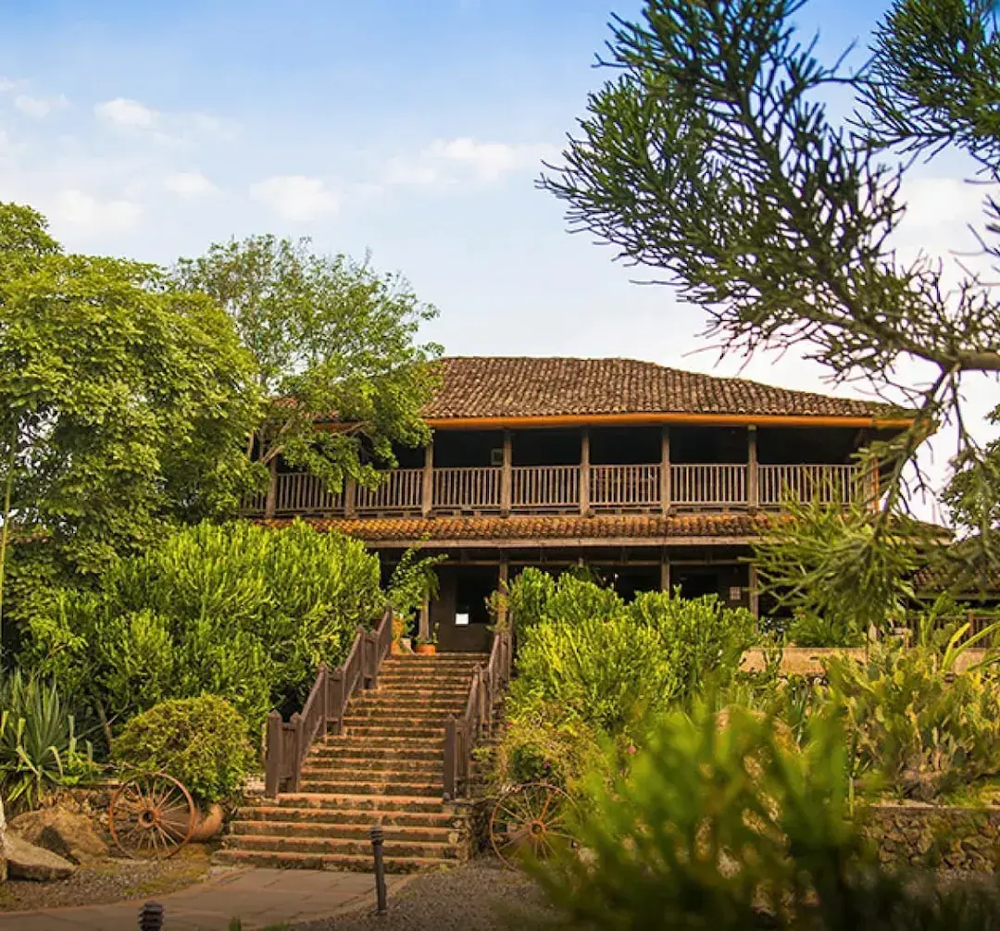
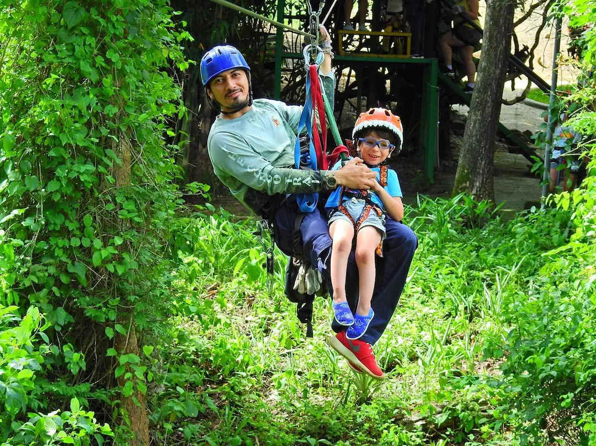

Updated July 2026
Traveling to La Fortuna and Riu Guanacaste with young children? Here is when strong swimmers still benefit from bringing properly fitted life jackets.
- Bring properly fitted life jackets for each child
- Strong pool swimmers may still struggle with ocean waves
- Life jackets are most useful at beaches and on boats
- Tour operators provide specialized gear for rafting and tubing
- Life jackets never replace active adult supervision
Recommended For Your Trip

Palo Verde & Cultural Experience El Viejo
Covered boat ride down the Tempisque River through Palo Verde National Park, then a private visit to Hacienda El Viejo, tortilla making, the ox-powered trapiche sugar mill, and traditional Guanacaste cuisine. Lunch and National Park fee included.
Sensoria Land of Senses & Magical Rainforest
Private full-day Sensoria nature reserve, 7km rainforest trail with multiple waterfalls, thermal pools, howler monkeys and incredible biodiversity where Guanacaste transforms into lush rainforest. Walking sticks and lunch included.

Congo Trail Half-Day Adventure
Six zip lines, hanging bridges, 45 minutes on ATV and horseback riding through Guanacaste dry forest. Half-day private adventure at Congo Trail with certified bilingual guide.
Should You Pack Life Jackets for Your Children?
For children ages 8, 7 and 5 who are already confident swimmers, life jackets may not be necessary during every minute spent in a calm hotel pool. However, we would still recommend bringing properly fitted life jackets, especially for the youngest child.
Swimming ability is only one part of water safety. Unfamiliar pool depths, slippery surfaces, waves, currents, crowded swimming areas and fatigue can create conditions that children do not normally experience during swimming lessons or at their local pool.
The best approach is not to require a life jacket everywhere. Instead, bring one for each child so you can use it whenever the environment becomes less predictable.
Water Safety at Hotel Los Lagos in La Fortuna
Hotel Los Lagos has several thermal and regular-water pools. The pools vary in temperature, depth and layout, which makes the property enjoyable for families but also means children may move between very different swimming environments.
For the 7- and 8-year-olds, close adult supervision may be enough in shallow or familiar-feeling pools if they are truly strong swimmers. For the 5-year-old, a life jacket can provide an additional layer of protection in deeper pools, busy areas or whenever the supervising adult cannot remain within immediate reach.
Thermal pools also require a slightly different approach from ordinary swimming pools. Encourage children to take breaks, drink water and leave any pool that feels uncomfortably hot. Always follow the hotel's posted rules around slides, pool depths and thermal-water areas.
Do not automatically use a personal life jacket on a water slide. Some facilities restrict flotation devices on slides because they can affect a rider's position. Follow the instructions given by hotel staff.
Bring your own fitted jackets for the beach and hotel pools, but use the tour operator's activity-specific equipment for rafting, tubing or boat excursions. At the beach, ask staff about that day's ocean conditions before the children enter the water.
What About the Pools and Beach at Riu Guanacaste?
Riu Guanacaste has swimming pools, water attractions and direct access to Matapalo Beach. These environments should be treated differently.
Hotel Pools
Strong swimmers may not need life jackets in ordinary pools when a responsible adult is actively watching them. Still, a jacket can be helpful for the youngest child, during crowded periods or when children are tired after a long day of tours and travel.
Water Park and Slides
Follow the resort's age, height and safety restrictions for every attraction. A personal life jacket may not be allowed on certain slides, and wearing one does not make a child eligible for an attraction that has a minimum height requirement.
The Beach and Ocean
The ocean is where we would be most cautious. Children who swim well in a pool may not be prepared for waves, changing depth, uneven footing or currents.
Life jackets are strongly recommended when children are swimming beyond shallow water, playing where waves are breaking, kayaking, paddleboarding or participating in a boat activity. Before entering the ocean, ask resort or beach staff about the conditions that day.
Should You Bring Your Own or Use the Tour Company's?
Bringing your own life jackets has one major advantage: you already know that each jacket fits the child correctly. Hotel loaner jackets may be limited, and the available sizes may not fit every child comfortably.
For organized activities such as rafting, river tubing, kayaking or boat tours, the operator should provide the activity-specific safety equipment. Confirm children's ages and approximate weights when making the reservation so the company can prepare the correct sizes.
Use the equipment provided by the tour operator when required. A lightweight recreational swimming vest may not be an appropriate replacement for a rafting or river-rescue flotation device.
How Should a Child's Life Jacket Fit?
Choose a certified life jacket designed for the child's current weight. It should feel snug without restricting breathing or arm movement.
Fasten every buckle and strap, then gently lift the jacket at the shoulders. It should not rise over the child's chin, ears or face. Younger children may benefit from a model with a crotch strap, which helps prevent the jacket from riding upward.
Have the children try their jackets in shallow water before the trip. They should feel comfortable floating, turning and moving while wearing them.
Inflatable arm bands, pool noodles and inflatable rings are toys, not substitutes for a certified life jacket or active adult supervision.
Our Recommendation for This Family Trip
We would bring one properly fitted life jacket for each child, even though all three are good swimmers. You may not use them every day, but having them available gives you more flexibility and avoids depending on hotel inventory.
At Los Lagos, they will be most useful for the youngest child in deeper or busier pools. At Riu Guanacaste, prioritize them for the beach, ocean activities, kayaking and boat trips.
For rafting, tubing or organized excursions, confirm the children's ages and weights before the tour and use the specialized equipment provided by the operator.
The most important safety measure remains active adult supervision. Life jackets add protection, but they should never be treated as a replacement for a responsible adult watching the children closely.
Frequently Asked Questions
Do strong swimmers need life jackets in Costa Rica?
Not necessarily in every calm swimming pool. However, swimming ability does not remove the risks created by waves, currents, unfamiliar depths, fatigue or crowded water areas. Life jackets are especially valuable at beaches, on boats and during river activities.
Should all three children wear them in the hotel pools?
The 7- and 8-year-olds may not need them in a calm pool when they are actively supervised. The 5-year-old may benefit from wearing one in deeper, crowded or unfamiliar pools.
Should children wear life jackets in the hot springs?
It depends on the pool depth, the child's ability and how closely an adult can supervise. A life jacket can help in deeper pools, but it does not replace taking breaks, staying hydrated and following temperature guidance.
Will Riu Guanacaste provide life jackets?
Availability can change, so contact the resort directly rather than assuming that children's sizes will be available. Bringing your own ensures that each child has a jacket that fits properly.
Do Costa Rica tour companies provide life jackets?
Reputable boating, rafting and tubing operators normally provide the required safety equipment. Parents should confirm the children's ages and weights in advance so properly sized jackets can be prepared.
Can children wear inflatable arm floaties instead?
No. Inflatable swimming aids can deflate, move out of position or create false confidence. They should not replace a certified life jacket or close adult supervision.
Do children need life jackets while playing at the edge of the beach?
Children standing in calm, ankle-deep water may not need them, but an adult should remain within immediate reach. Use the jackets when waves are stronger, the water becomes deeper or the children participate in ocean activities.
We respond on WhatsApp in under 2 hours.
Private tours, airport transfers, expert guides — all in one message.
No WhatsApp? Email us at info@wildpapagayo.com